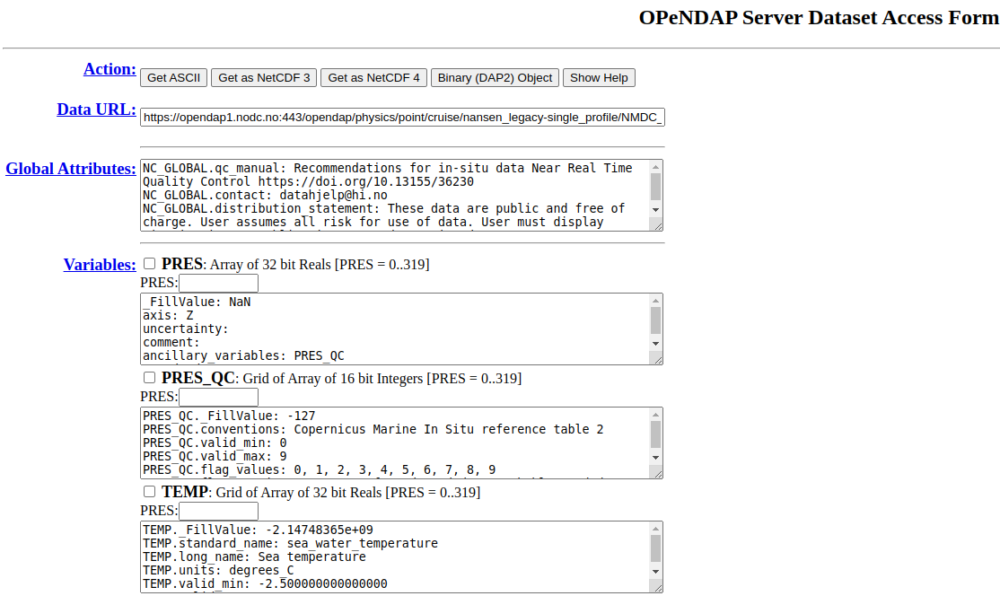
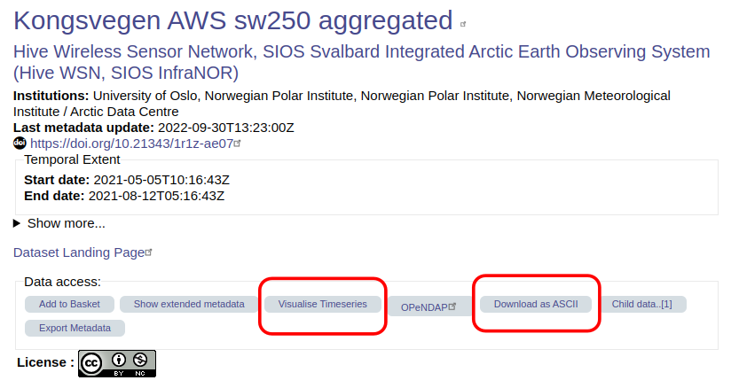

How to open a NetCDF file#
NetCDF files are software independent, so there is a lot of different ways to open a file and extract the data and metadata. However, since they are binary files, you can’t simply open a NetCDF file in a text editor.
Each subsection below describes a different way to open a NetCDF file.
Using common programming languages#
Most common programming languages have libraries that can be used to work with NetCDF files. Here are some useful materials for different programming languages.
Python#
There are a few different libraries that can be used to open NetCDF files in Python. Perhaps the two most common are xarray and netcdf4.
netcdf4#
Provides a low-level interface to read and write NetCDF files. It’s a direct wrapper around the NetCDF C library. It provides you with more control over handling data structures, attributes, and dimensions compared to xarray. It gives you direct access to all NetCDF features, including advanced features like parallel I/O and compression. It is therefore often more useful for tasks that require fine control over NetCDF data and performance optimizations.
Some useful materials:
netcdf4 documentation: https://unidata.github.io/netcdf4-python/
xarray#
Builds on top of netCDF4 and other array libraries like NumPy and pandas to provide a high-level interface for working with multi-dimensional arrays. It’s designed for labeled, multi-dimensional data, such as NetCDF files (but not exclusively NetCDF files). Compared to netcdf4 it provides more convenient functionality which makes it much simpler to work with NetCDF files. It is suitable for most tasks working with NetCDF files, and has built-in functions for plotting data and converting data to or from pandas dataframes which can simplify your workflow.
Some useful materials:
Tutorial series on working with NetCDF files using xarray: https://lhmarsden.github.io/NetCDF_in_Python_from_beginner_to_pro
xarray documentation: https://docs.xarray.dev/en/stable/
from IPython.display import YouTubeVideo
YouTubeVideo('699jkjLJGyM')
R#
There are a few different libraries that can be used to open NetCDF files in R. Perhaps the two most common are RNetCDF and ncdf4.
RNetCDF#
Provides an interface to the NetCDF C library for reading and writing NetCDF files in R. Suitable for detailed operations on NetCDF files within the R programming environment.
Some useful materials:
Tutorial series for working with NetCDF files using R: https://lhmarsden.github.io/NetCDF_in_R_from_beginner_to_pro
RNetCDF documentation: https://cran.r-project.org/web/packages/RNetCDF/RNetCDF.pdf
YouTubeVideo('Xer1XBm3sns')
Panoply#
Panoply is a software tool developed by NASA’s Goddard Institute for Space Studies (GISS) that allows users to visualize and analyze data stored in NetCDF files, along with other formats such as HDF (Hierarchical Data Format) and GRIB (GRIdded Binary). Panoply is particularly useful for handling geospatial data, making it popular in the fields of climate science, meteorology, and oceanography.
Panoply can be downloaded from the official NASA GISS website, and is available for Windows, Linux and Mac users. https://www.giss.nasa.gov/tools/panoply/download/
Here is a short video tutorial on how to download Panoply (no installation required), plot data, and export the data to CSV or Excel.
YouTubeVideo('AHNaDI6B92o')
ncdump#
ncdump is a command-line utility that is primarily used for:
Displaying the contents of NetCDF files: It converts NetCDF binary files into a human-readable ASCII format.
Checking the structure and metadata: It provides detailed information about the dimensions, variables, attributes, and data types contained in a NetCDF file.
Installation#
Linux#
sudo apt-get update
sudo apt-get install netcdf-bin
macOS#
Install Homebrew (if not already installed):
/bin/bash -c "$(curl -fsSL https://raw.githubusercontent.com/Homebrew/install/HEAD/install.sh)"
Install NetCDF:
brew install netcdf
Windows#
There is some information here on how to install ncdump for Windows https://pjbartlein.github.io/REarthSysSci/install_netCDF.html
Verification#
After installation, you can verify that ncdump is installed correctly by running:
ncdump -h
This command should display the help information for ncdump, confirming that the installation was successful.
Basic Usage#
The basic syntax of ncdump is:
ncdump [options] filename
Common Options:
-h: Show the header information (metadata) only, without the variable data.
-c: Show the header information along with coordinate variable data.
-v: Show data for specified variables only, e.g.
ncdump -v temperature,pressure filename.nc.-x: Output in XML (NcML) format.
-k: Show the kind of the NetCDF file (e.g., classic, 64-bit offset, netCDF-4, etc.).
-f: Show floating point values with full precision.
Converting data#
While its primary function is not conversion, ncdump can be used to output data in a format that can be further processed or converted into other formats using additional tools. For example, to write the values from a variable to a text file:
ncdump -v variable_name your_file.nc > output.txt
Download the data directly as a CSV or ASCII file#
Because CF-NetCDF files are standardised, it is possible for data centres and data access portals to build ways for the user to download the data directly into CSV or ASCII files. This makes it easier for some people to access the data. Whether this is possible or not depends on the data centre/data access portal and the file. Not all services offer such services. This might be something to consider when deciding where you want to publish your own NetCDF file.
Here are some things to look out for.
OPeNDAP#
You might see that the data are available via OPeNDAP. OPeNDAP, which stands for “Open-source Project for a Network Data Access Protocol,” makes it easier to access and share scientific data over the internet. One advantage of using OPeNDAP is that you don’t need to download the NetCDF file to use the data inside!
The data centre or data access portal can direct you to an OPeNDAP data access form like this one: https://opendap1.nodc.no/opendap/physics/point/cruise/nansen_legacy-single_profile/NMDC_Nansen-Legacy_PR_CT_58US_2021708/CTD_station_P1_NLEG01-1_-Nansen_Legacy_Cruise-_2021_Joint_Cruise_2-1.nc.html

It provides you with a preview of the data, showing you all the variables included as well as the variable and global attributes. It allows you to:
Download the data to either an ASCII file or a NetCDF file
Select the checkboxes to access only certain variables
Select only a subset of each variable by using the text boxes above each variable (after selecting the checkbox)
You can copy the Data URL at the top into your code and use it just like you would do some filepath on your computer. Therefore you can stream the data over the internet without having the download the file to your local computer.
Custom services#
Some data centres or data access portals might allow you to visualise the data on-the-fly on the dataset landing page. They might also include buttons or icons that you can click to download data directly into a CSV or ASCII file.
See this example on the SIOS data access portal:
